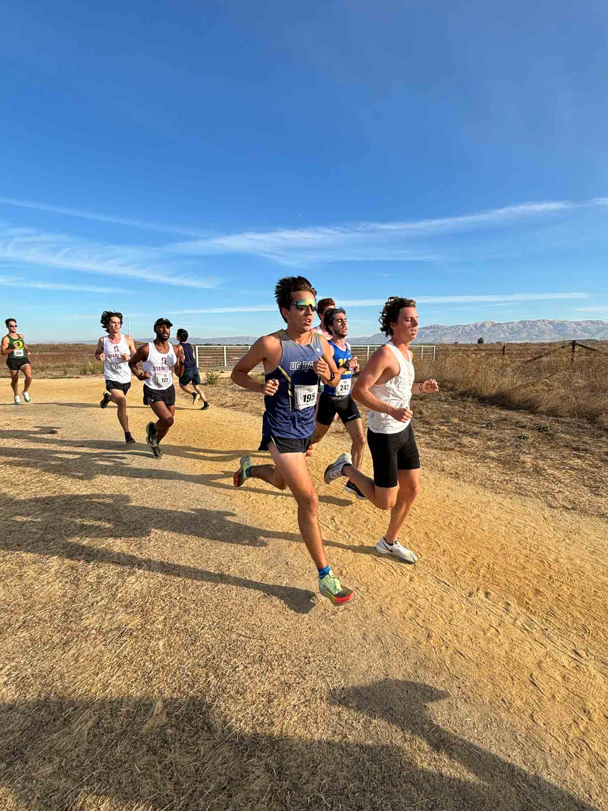
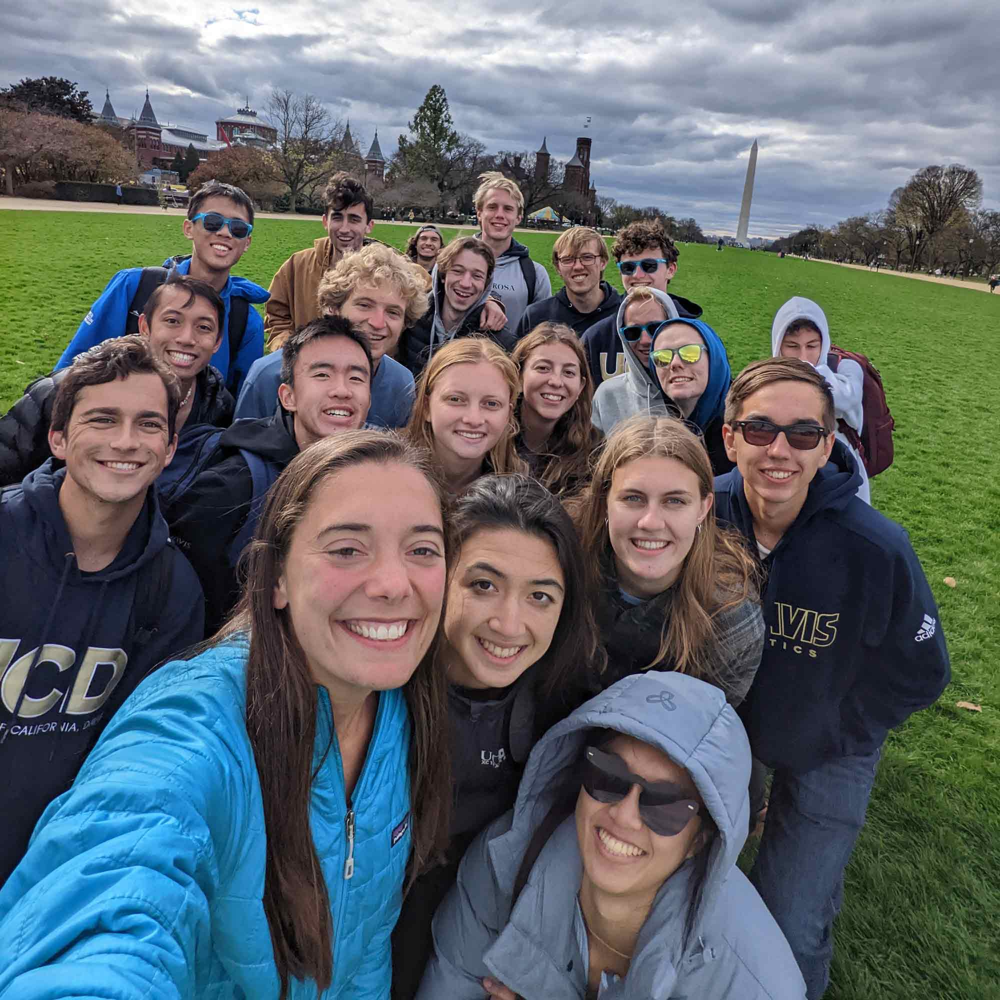
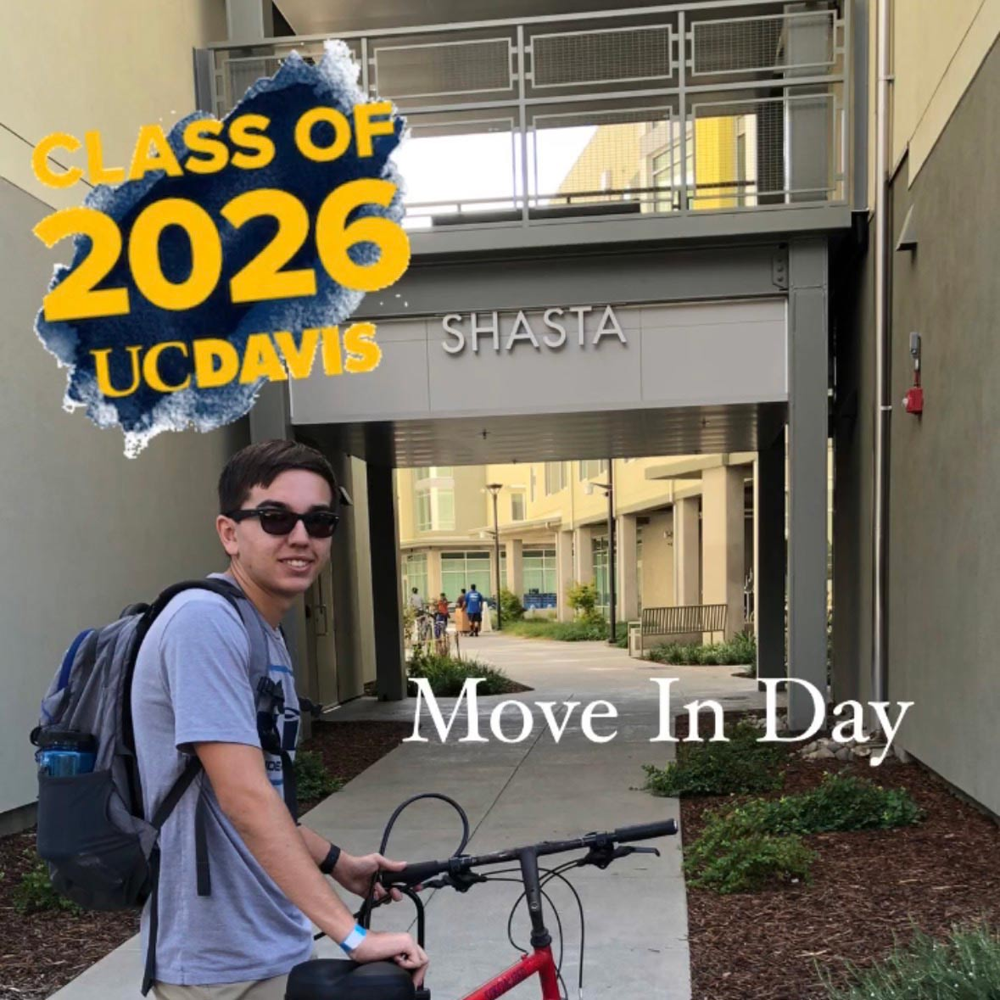
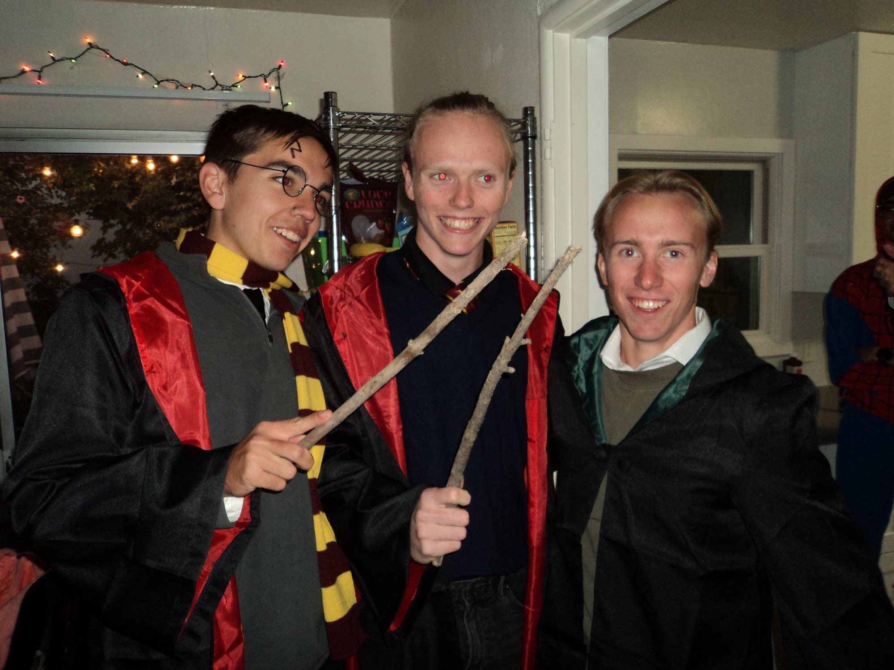
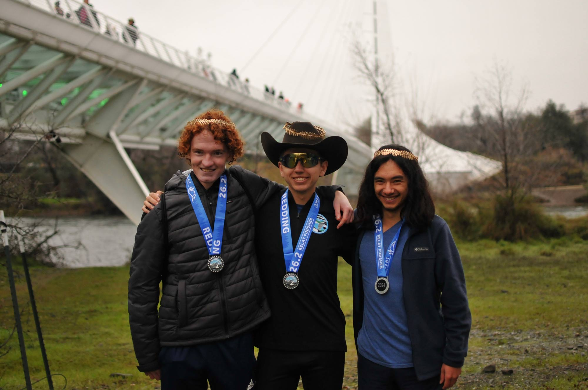
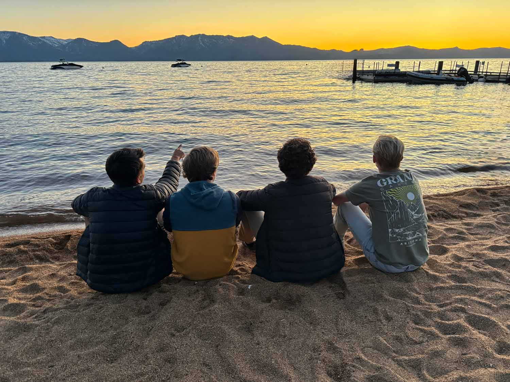
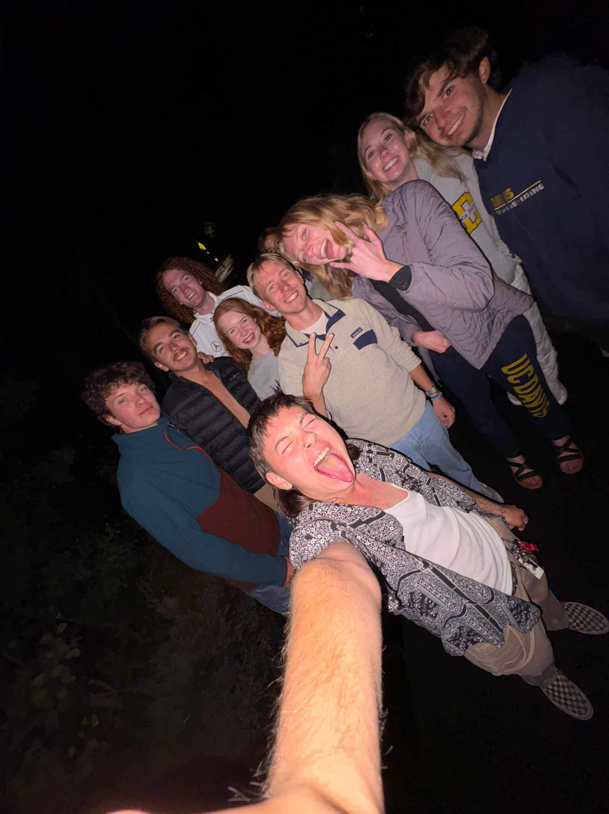
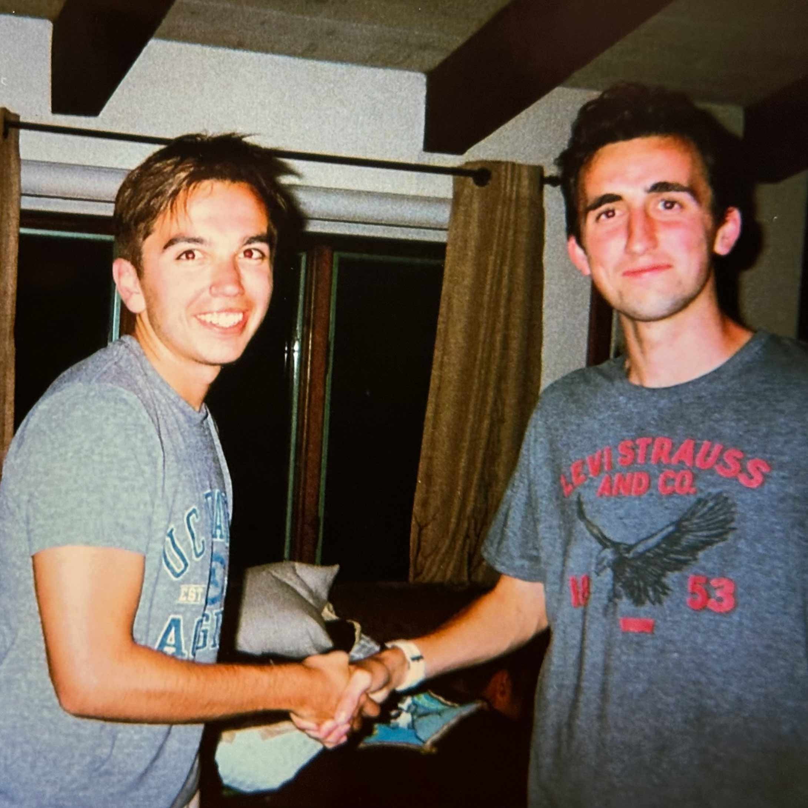
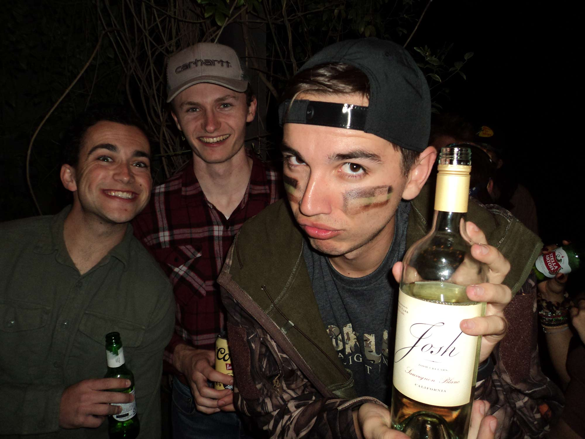
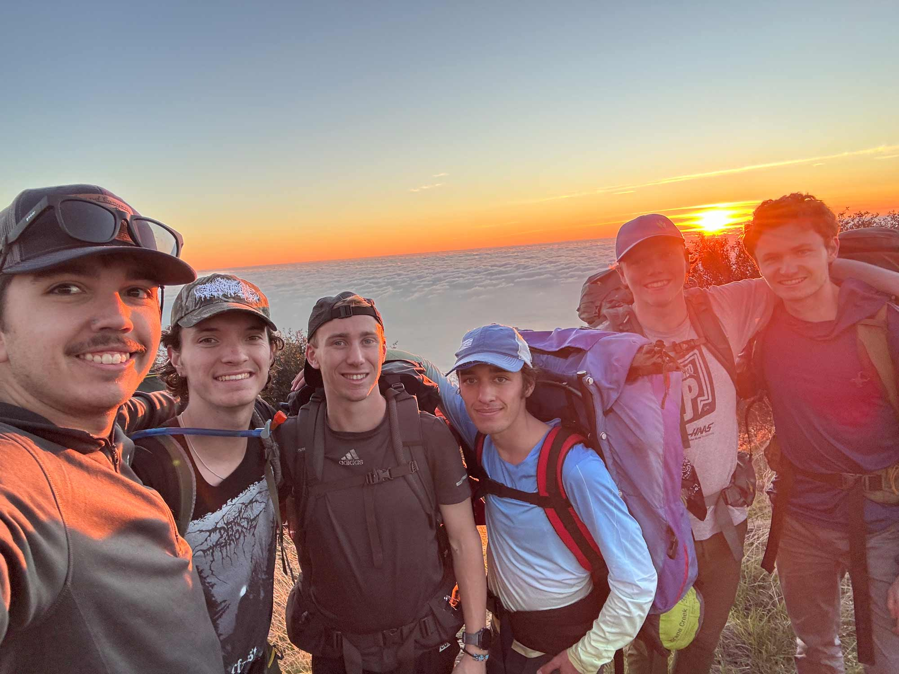

Four years. Thousands of moments. One campus that became home. This is the story of late nights, a club team, a clique, and lessons no textbook could teach.
Scroll through the snapshots - each one a memory frozen in time, a polaroid pulled from the wall of the best years of my life.

Everything felt terrifying and exciting. Moving into the dorms, making freinds, and finding a new running community.
The beginning of MY LIFE!

some moments deserve their own wall






Somewhere between Design classes and running through campus on Sheep Loop, it hit - this was the final chapter. And what a chapter it was.
The memories keeps playing in my head. The people, the places, the 2 AM laughs. Some things you don't realize you'll miss until they're already gone.
